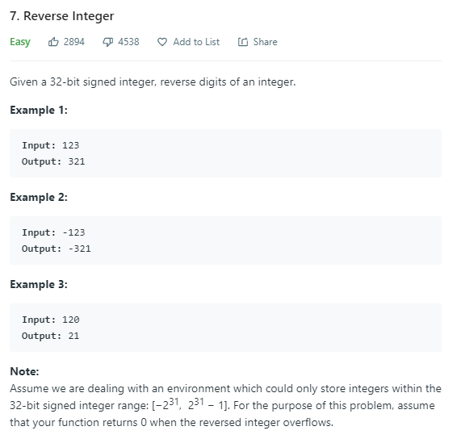

数字操作
2020-02-27 / ClownW
7. Reverse Integer
问题描述：

给定一个32位有符号数，翻转它的每一位。检查溢出后输出结果。
初步思路：转换成字符再转换回来，不够优雅的方法，且速度慢。
算法：
利用堆栈的方式，恰好可以实现翻转。进一步，可以省去堆栈的空间，每次弹出最末尾的数并保留前面的数。
remainder = x % 10；x /= 10
res = res*10+remainder
代码：
1 | class Solution: |
本文链接：http://clownw.github.io/%E6%95%B0%E5%AD%97%E6%93%8D%E4%BD%9C/